Практичний досвід · журнал «ДентАрт» 2013 №4 (73)
Система Компонір — альтернатива непрямим реставраціям фронтальних зубів
ALTERNATIVE TO INDIRECT RESTORATION OF ANTERIOR TEETH
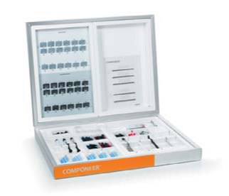
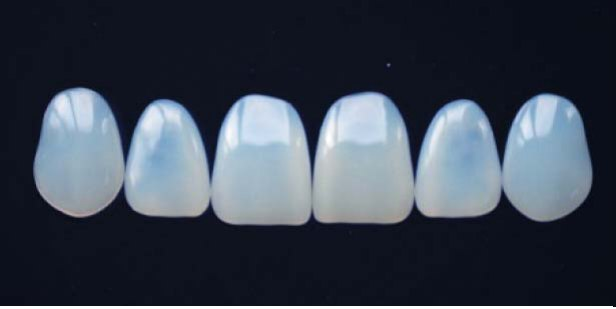
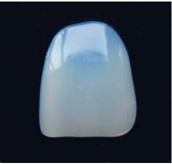
Фото 1. Сиситема реставрації фронтальних зубів Компонір, розроблена фірмою Колтен/Валедент (Швейцарія).
За останні 15 років удосконалення реставраційних матеріалів і методик їх використання дозволило задовольнити найвищі естетичні вимоги пацієнтів. Переважна кількість пацієнтів чекає від стоматолога створення «невидимих» реставрацій (Ж-Ф. Руле, Р. Спреафіко, 2005). Вони відстоюють свою точку зору при виборі кольору і форми реставрації (Л. Г. Аюпова, 2007), їх цікавить досягнення результату при максимальному збереженні неушкоджених тканин. Таким чином, пацієнти ставлять завдання, для вирішення якого від лікаря вимагається уміння спрогнозувати і, по можливості, представити кінцевий результат ще до початку лікування — за допомогою воскового моделювання зубів на моделях, фотографій подібних клінічних ситуацій, комп'ютерного моделювання і т. д. Щоб захопити «просунутого» пацієнта, зацікавити широкою палітрою сучасних видів реставрації передніх зубів, лікареві дуже важливо йти в ногу з розвитком високих технологій і удосконалювати свої мануальні навички. Стоматологам, котрі займаються естетичною реставрацією зубів, часто доводиться стикатися з проблемою вибору між прямими і непрямими методиками відновлення передніх зубів. Багато років триває негласне протистояння ортопедів і терапевтів. Навіть нині, коли зростає клас фахівців-універсалів, котрі працюють як у прямій, так і в непрямій техніці, ми схиляємося до тих чи інших методів, іноді необґрунтовано, боячись яких-небудь ускладнень (К. Лазарєва, 2009).
Виходячи з нагромадженого досвіду і актуальності проблеми, компанія Колтен/Валедент ЕйДжі Coltene/Whaledent AG (Швейцарія) розробила нову систему реставрації фронтальних зубів — Kомпонір, що поєднує в собі переваги прямої і непрямої техніки реставрації. Ми провели реставраційне лікування із застосуванням компонірів фронтальних зубів у 12 пацієнтів з різними скаргами на естетичні дефекти, включаючи наявність неякісних пломб, дисколоритів, діастеми, неправильне положення зубів, неестетичність форми. Компонір — це стандартизована накладка, що імітує емаль, яка виготовляється промисловим способом з оригінального полімеризованого високонаповненого наногібридного композиту. Емалеві накладки компонір або пластинки мають товщину від 0,3 мм у пришийковій зоні до 0,7 мм в зоні ріжучого краю. Нині фірма-виробник пропонує на вибір три варіанти розмірів (великі, середні і малі) для передніх зубів верхньої і нижньої щелепи, а також два різновиди за опаковістю пластинок — білі та універсальні. Kомпонір – це завершена, добре продумана система. Випускається у вигляді основного комплекту Бейсік Систем-Кіт/BASIC SYSTEM-KIT з 36 вінірами або комплекту Преміум Систем-Кіт/РREMIUM SYSTEM-KIT, що містить 84 вініри (фото 1). До складу обох комплектів входить повний комплекс додаткових матеріалів, спеціально розроблених інструментів, що забезпечують просте і безпечне застосування.
- Шаблони компонірів (фото 2). Унікальний комплект блакитнуватих прозорих форм забезпечує точну відповідність контуру зуба і таким чином дозволяє легко вибрати необхідний розмір компоніра для майбутньої реставрації (по 3 розміри на кожну щелепу).
- Тримач для компонірів (фото 3) — це пінцет спеціальної конструкції, який істотно спрощує коригування форми емалевої пластинки компоніра, а також нанесення на неї бонду і реставраційного матеріалу. Змінні насадки, чорні ковпачки оберігають компонір від ушкодження.
- Інструмент для установки компонірів (фото 4), створений фахівцями-практиками, використовується для вирівнювання і належного розміщення вінірів, виключає сковзування.
- Моделюючий інструмент MB5 Компонір (фото 5). Особлива конструкція інструменту забезпечує його вільне обертання під час моделювання. Надзвичайно тонкий і гострий кінець шпателя дозволяє акуратно видаляти надлишки композиту.
- Універсальний нанонаповнений мікрогібридний композитний матеріал Сінерджи Д6/ SYNERGY D6 і Сінерджи Д6 флоу/ SYNERGY D6 Flow (фото 6). Компонір закріплюється цим матеріалом, який об'єднує основу, що реставрується, і реставрацію в єдине ціле (дентин/емаль + композит + компонір). Сінерджи Д6 чудово пасує до компонірів за кольором, оскільки самі пластинки виготовлені саме з цього пломбувального матеріалу. Простота у виборі відтінків, чудові моделюючі властивості і висока стійкість до впливу робочого світла дозволяють вважати цей композит одним з ідеальних матеріалів для фіксації вінірів. Висока плинність Сінерджи Д6 флоу забезпечує виконання належного контуру і завершальної обробки.
- Однокомпонентна адгезивна система Ван Коат Бонд/One Coat Bond (фото 7) — представник V покоління адгезивів, які застосовуються в техніці тотального протравлювання. Матеріал водорозчинний і, відповідно, менш випаровуваний, що дозволяє збільшити робочий час при його нанесенні на компонір. Висока сила адгезії матеріалу до тканин зуба забезпечує довготривале бездоганне крайове прилягання реставрації.
- Полірувальні диски і смужки різної абразивності, полірувальні головки у вигляді чашок і конусів, щітки з натуральної щетини дозволяють провести ретельне шліфування і полірування поверхні. При виконанні роботи зберігаються усі етапи адгезивної техніки, включаючи препарування поверхні, ізоляцію робочого поля за допомогою рабердаму, обробку ортофосфорною кислотою, нанесення адгезиву і матеріалу з подальшою полімеризацією, а також шліфування і полірування реставрації.
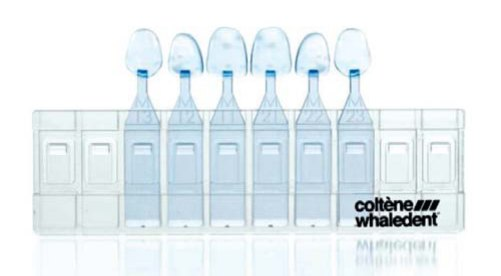
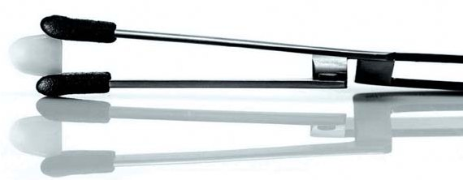
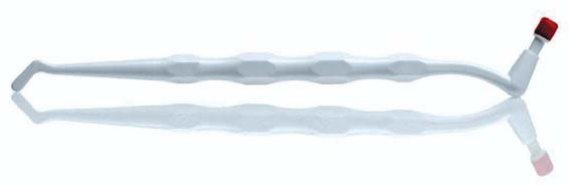
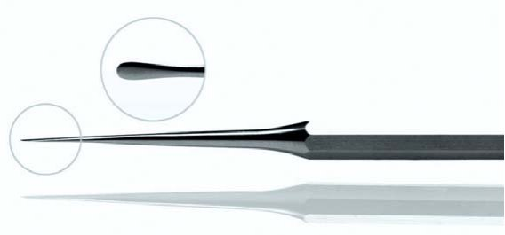
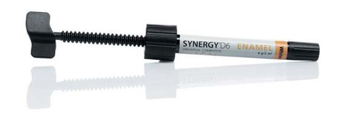
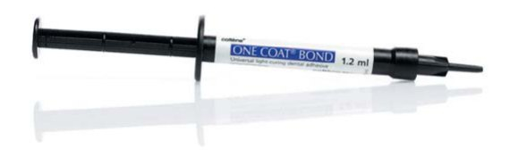
Клінічний приклад
У клініку «Дизайн Усмішки» (м. Москва) звернулася пацієнтка Т., 33-х років, зі скаргами на косметичний дефект у ділянці фронтальних зубів верхньої щелепи. Пацієнтка зверталася до інших стоматологічних установ, де їй пропонували ортодонтичне лікування або зміну форми зубів керамічними накладками. При огляді — діастема, незначне зміщення зуба 21 у вестибулярному напрямі, різна висота коронок зубів 11 і 21 (фото 8 а і 8 б). Запланована (і отримана інформована згода) реставрація зубів 11 і 21 з метою усунення косметичного дефекту за допомогою системи Компонір.
Під інфільтраційною анестезією проведене препарування вестибулярної поверхні зубів 11 і 21 на глибину в зоні шийки до 0,3 мм, в зоні тіла — до 0,5 мм і в зоні ріжучого краю — до 0,7 мм з утворенням невеликого уступу (фото 9). Використані конусні і кулясті бори середньої зернистості (червоне і синє маркування). Звертаємо увагу, що у цієї пацієнтки не робилося препарування в дистальній зоні вестибулярної поверхні кожного зуба у зв'язку з тим, що максимальний розмір компоніра (композитного вініра) не покривав усю вестибулярну поверхню. Після ізоляції рабердамом зуби повністю готові до реставрації (фото 10). Після проведення адгезивної підготовки зубів і адгезивної підготовки компоніра до реставрації виконане припасування компоніра до поверхні зуба (фото 11). Висока стійкість реставраційного матеріалу до впливу робочого світла і водна основа адгезиву дозволяють досить тривалий час припасовувати компонір на вестибулярну поверхню зуба. При цьому необхідно витиснути матеріал за межі пластинки, виключаючи утворення пор, і припасувати так, щоб подальше коригування форми бором або матеріалом було мінімальним. На фото 12 а і 12 б — проміжні етапи побудови реставрації. Після полімеризації матеріалу виконана корекція форми за допомогою світлозатверджувального текучого композиту в ділянці крайового прилягання компоніра, шліфування поверхонь конусними борами дрібної зернистості (з жовтим і білим маркуванням), абразивними смужками різної дисперсності на проксимальних поверхнях. Полірування полірувальними головками з комплекту системи Компонір у вигляді чашок і конусів не передбачає використання якої-небудь полірувальної пасти і виконується без подання води.
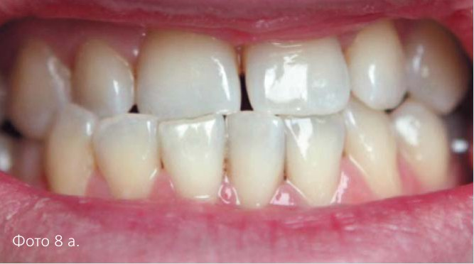
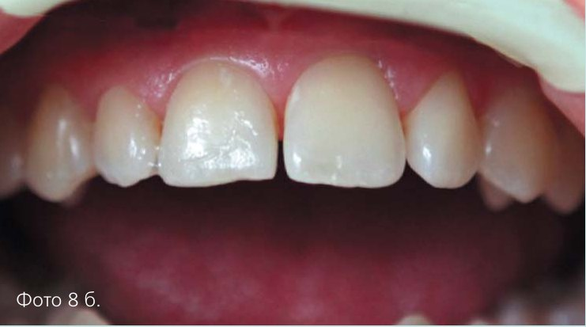
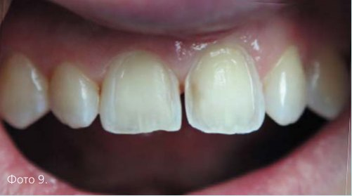
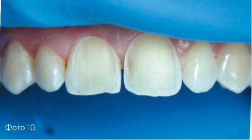
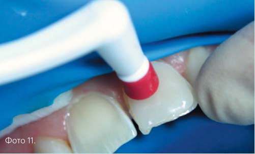
Після фінішної полімеризації реставрації робиться остаточне полірування за допомогою щітки з натуральної щетини з восковим покриттям (фото 13 а і 13 б). На прикладі конкретної клінічної ситуації можна проаналізувати естетичний результат і певні переваги прямої реставрації за допомогою системи Компонір. Зуби відновлюються за одні відвідини, причому роботу від початку і до кінця виконує один стоматолог. На етапі планування реставрації лікареві нескладно прикласти готові накладки до зубів пацієнта, що дає можливість продемонструвати кінцевий результат реставрації (фото 14 а, 14 б). За необхідності і без участі техніка лікар самостійно може провести корекцію форми і кольору зубів у пацієнта. Однією з важливих позитивних особливостей цих реставрацій є щадне препарування тканин зуба, зуб залишається життєздатним.
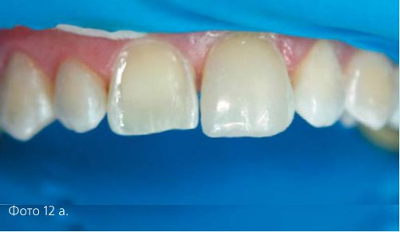
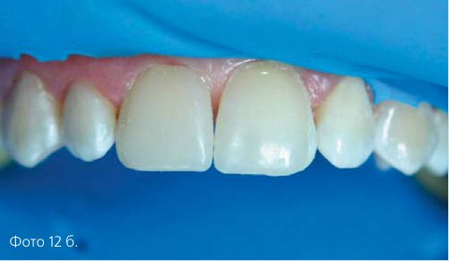
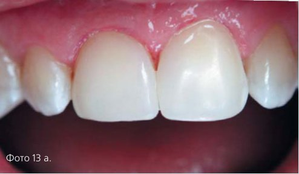
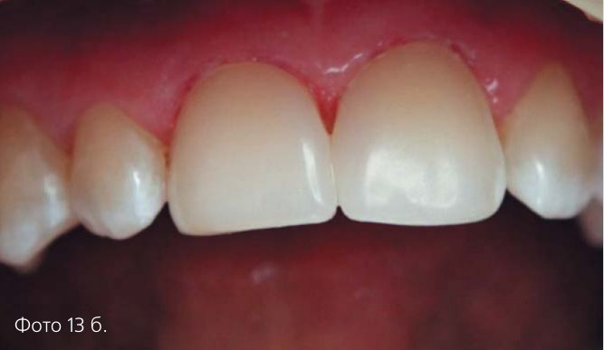
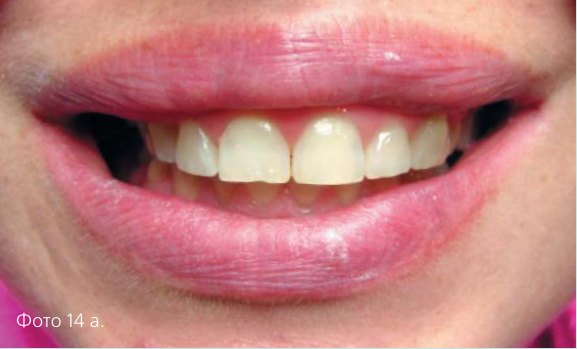
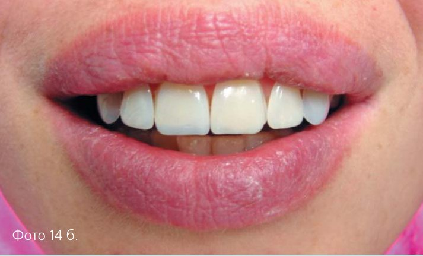
Слід зазначити, що при роботі з компонірами не відбувається значної усадки матеріалу і не виникає висока напруга полімеризації, оскільки компоніри – це вже готові композитні накладки. Проте не варто ідеалізувати запропоновану методику, оскільки ми виявили і деякі недоліки, зокрема це недостатня кількість колірних відтінків і розмірів компонірів. Наші рекомендації передані фірмі-виробникові з надією на виробництво необхідного асортименту компонірів.
Ми вважаємо, що запропонована методика – це високоефективний метод прямої реставрації, який доповнює наявні методики, що застосовуються в естетичній стоматології.